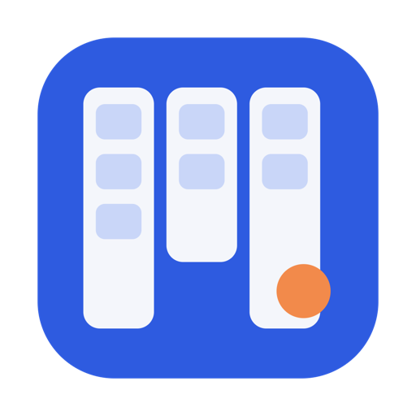
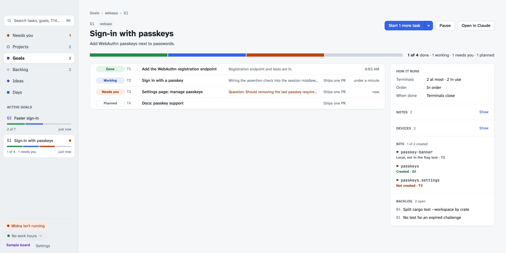

Taskboard
A native Mac task board for Claude Code sessions running in Midna.
Queue tasks and goals, and Taskboard starts a Claude terminal in Midna for each one, shows what every terminal is doing, and hands its context to the next terminal if one closes early.
Download for Mac
Install
- Open the DMG from your Downloads folder.
- Drag Taskboard into Applications.
- Open Taskboard. If macOS asks, allow it in Login Items so its daemon keeps the board running.
- Click Install hooks at the foot of the sidebar, so Claude Code sessions report to the board.